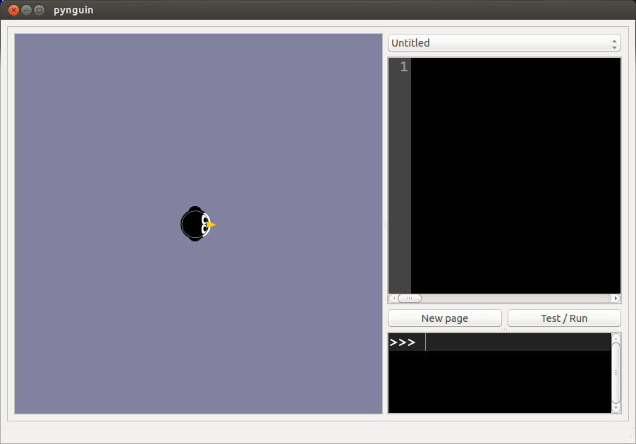

When you first launch Pynguin, you will see a three panel window that looks like this:

The full height pane on the left is called the canvas, and is where graphics commands given to the pynguin are executed. The top right pane is called the code editor. This is where you will write your Python scripts to be saved and executed whenever you click the button.
Pynguin comes with a large set of built-in commands for drawing on and controlling the graphics environment. A good starting set of these commands are included in the Pynguin Graphics Functions reference sheet.
fill command to fill in the figures.